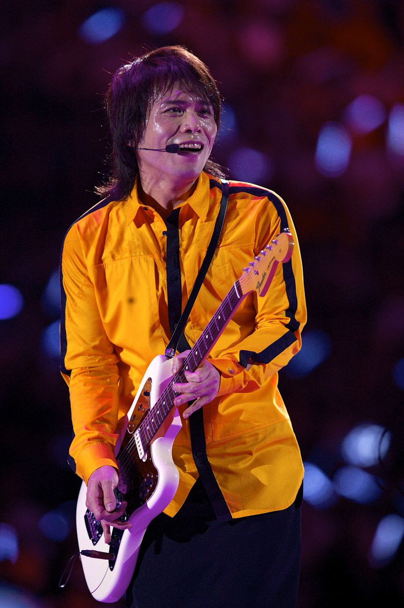
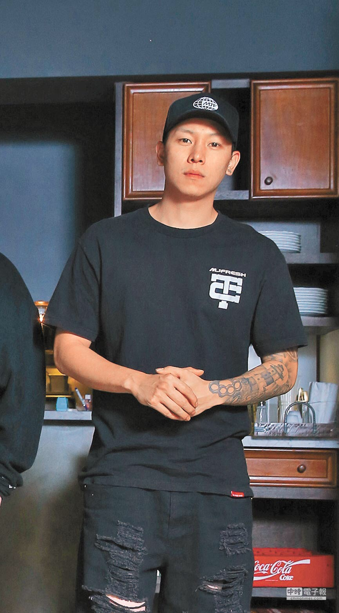
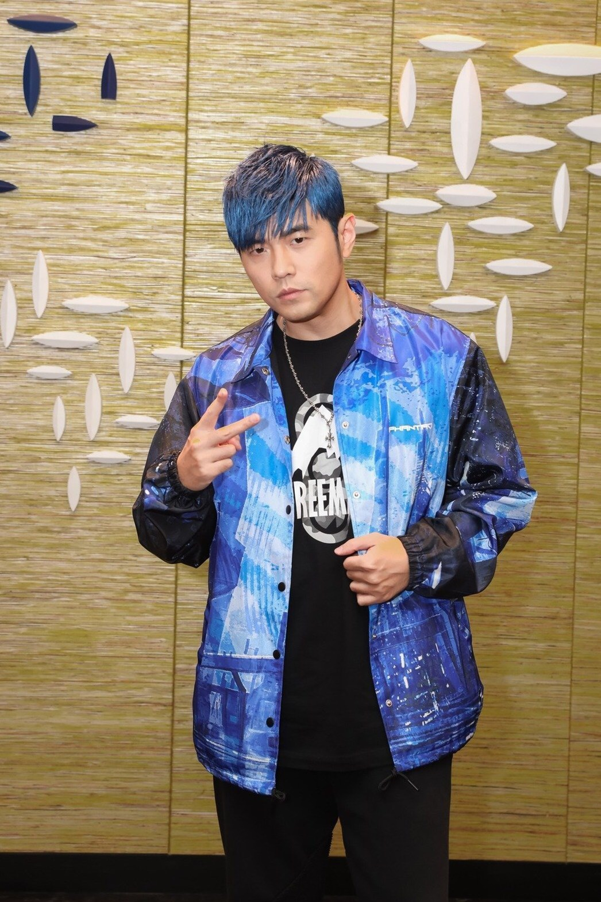
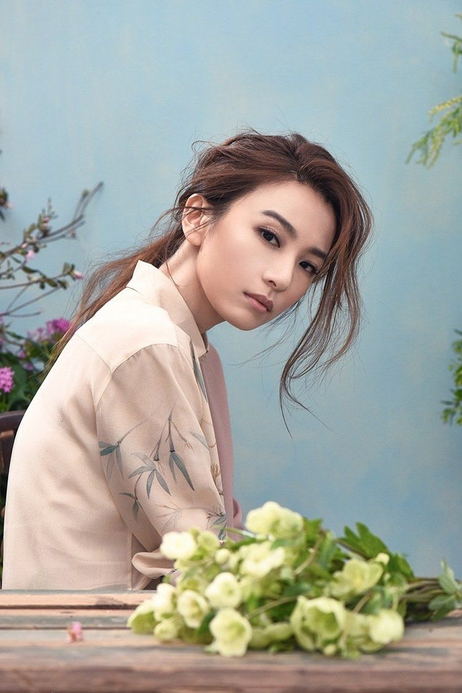
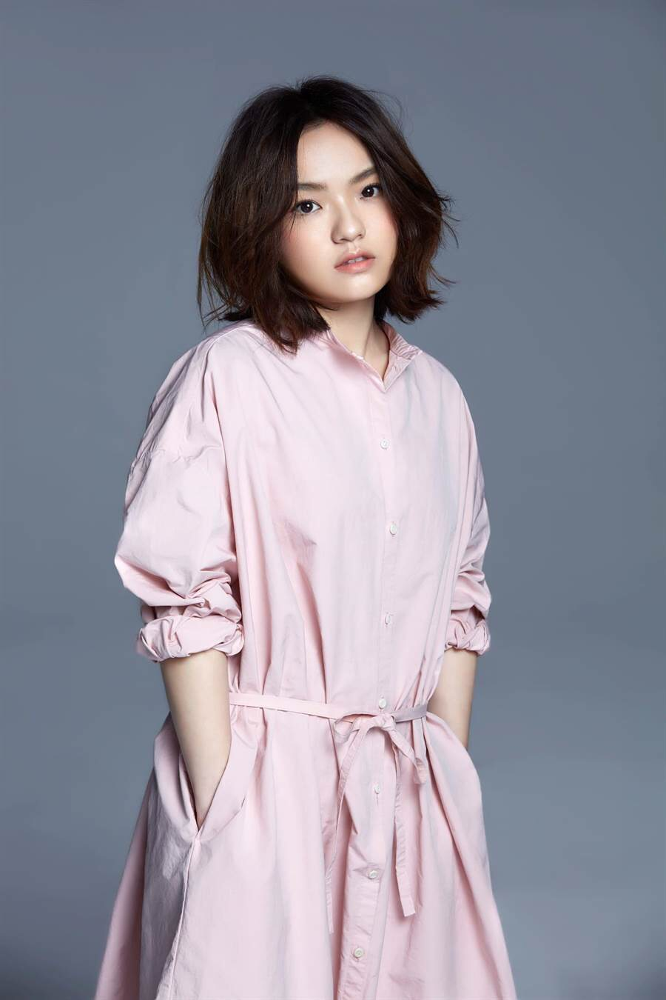

|
||||
|  | 伍佰，本名吳俊霖（1968年1月14日－） 臺灣嘉義縣六腳鄉蒜頭村人，華語知名的國語、台語搖滾歌手，詞曲創作人，音樂製作人 並身兼已成軍二十五年之搖滾樂團「伍佰 & China Blue」的主唱及吉他手。 |
|---|
| 陳昱榕（英語：E-SO，1987年9月30日－） 簡稱瘦子，是一名台灣饒舌歌手，出生於台北市木柵區 英文名E-SO取自於瘦子所居住的木柵區一壽街的諧音。為饒舌團體頑童MJ116成員。 |
 |
|---|
|  | 周杰倫（英語：Jay Chou；1979年1月18日－） 臺灣華語流行歌曲男歌手、音樂家、編曲家、唱片製片人、魔術師 同時是演員、導演，潮流品牌PHANTACi主理人、電子競技職業戰隊J Team的老闆。 |
|---|
|  | 田馥甄（1983年3月30日－），藝名Hebe 臺灣華語流行音樂知名女歌手，女子演唱團體S.H.E組合成員，出生於台灣新竹縣新豐鄉 於2000年參加「宇宙2000實力美少女爭霸戰」選秀活動，並於同年與宇宙唱片（華研唱片前身）簽約培訓 接著在隔年與Selina、Ella組成S.H.E，2010年下半年，S.H.E正式邁向「單飛不解散」階段。 |
|---|
| 徐佳瑩（1984年12月20日－） 生於臺灣花蓮縣，成長於臺灣臺中市 籍貫四川省簡陽縣，華語流行音樂創作女歌手。 |
 |
|---|